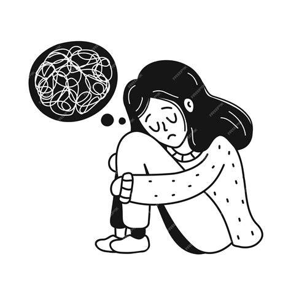

¿Que es la depresion?
La depresión es un trastorno emocional que causa un sentimiento de tristeza constante y una pérdida de interés en realizar diferentes actividades. También denominada «trastorno depresivo mayor» o «depresión clínica», afecta los sentimientos, los pensamientos y el comportamiento de una persona, y puede causar una variedad de problemas físicos y emocionales. Es posible que tengas dificultades para realizar las actividades cotidianas y que, a veces, sientas que no vale la pena vivir.
Más que solo una tristeza pasajera, la depresión no es una debilidad y uno no puede recuperarse de la noche a la mañana de manera sencilla. La depresión puede requerir tratamiento a largo plazo. Pero no te desanimes. La mayoría de las personas con depresión se sienten mejor con medicamentos, con psicoterapia o con ambos.
Si bien la depresión puede producirse solamente una vez en la vida; por lo general, las personas tienen varios episodios de depresión. Durante estos episodios, los síntomas se producen durante gran parte del día, casi todos los días y pueden consistir en:
En los adolescentes, los síntomas pueden comprender tristeza, irritabilidad, sentirse negativo e inútil, ira, bajo rendimiento o poca asistencia a la escuela, sentirse incomprendido y extremadamente sensible, consumir drogas de uso recreativo o alcohol, comer o dormir demasiado, autolesionarse, perder el interés por las actividades habituales y evitar la interacción social.
Se desconoce la causa exacta de la depresión. Al igual que sucede con muchos trastornos mentales, puede comprender diversos factores, como:
Diferencias biológicas. Las personas con depresión tienen cambios físicos en el cerebro. La importancia de estos cambios aún es incierta, pero con el tiempo pueden ayudar a identificar las causas.
Química del cerebro. Los neurotransmisores son sustancias químicas que se encuentran naturalmente en el cerebro y que probablemente desempeñan un rol en la depresión. Las investigaciones recientes indican que los cambios en la función y el efecto de estos neurotransmisores, y cómo interactúan con los neurocircuitos involucrados en mantener la estabilidad del estado de ánimo pueden tener un rol importante en la depresión y su tratamiento.
Hormonas. Es posible que los cambios en el equilibrio hormonal del cuerpo tengan un rol al causar o desencadenar la depresión. Los cambios hormonales pueden presentarse en el embarazo y durante las semanas o meses después del parto (posparto), y por problemas de tiroides, menopausia u otros trastornos.
La depresión es un trastorno grave que puede causar efectos devastadores tanto en ti como en tus familiares. La depresión suele empeorar si no se trata y puede derivar en problemas emocionales, de conducta y de salud que pueden afectar todos los aspectos de tu vida.
La depresión afecta el rendimiento académico al alterar las funciones cognitivas, reducir drásticamente la motivación y disminuir la energía. Esto provoca problemas de concentración, menor retención de información y, en casos severos, ausentismo o deserción escolar.
Las principales formas en que impacta el desempeño del estudiante incluyen:
Déficit de atención: La falta de energía y la rumiación mental dificultan el enfoque en clases y la comprensión de textos.
Alteraciones en la memoria: El procesamiento de información se ralentiza, lo que afecta la capacidad para rendir en exámenes.
Apatía generalizada: Se pierde el interés por aprender y por cumplir con las metas académicas a corto y largo plazo.
Aislamiento social: La interacción con compañeros y profesores disminuye, dificultando el trabajo en equipo y el aprendizaje colaborativo.